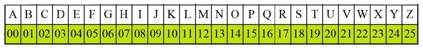

Caesar Cipher Algorithm
The Caesar cipher is the simplest and oldest method of cryptography. The Caesar cipher method is based on a mono-alphabetic cipher and is also called a shift cipher or additive cipher. Julius Caesar used the shift cipher (additive cipher) technique to communicate with his officers. For this reason, the shift cipher technique is called the Caesar cipher. The Caesar cipher is a kind of replacement (substitution) cipher, where all letter of plain text is replaced by another letter.
The formula of encryption is:
En (x) = (x + n) mod 26
The formula of decryption is:
Dn (x) = (xi - n) mod 26
If any case (Dn) value becomes negative (-ve), in this case, we will add 26 in the negative value.
Where,
E denotes the encryption
D denotes the decryption
x denotes the letters value
n denotes the key value (shift value)

Advantages of Caesar cipher
Its benefits are as follows: -
1.It is very easy to implement.
2.This method is the simplest method of cryptography.
3.Only one short key is used in its entire process.
4.If a system does not use complex coding techniques, it is the best method for it.
5.It requires only a few computing resources.
Disadvantages of Caesar cipher
Its disadvantages are as follows: -
1.It can be easily hacked. It means the message encrypted by this method can be easily decrypted.
2.It provides very little security.
3.By looking at the pattern of letters in it, the entire message can be decrypted.